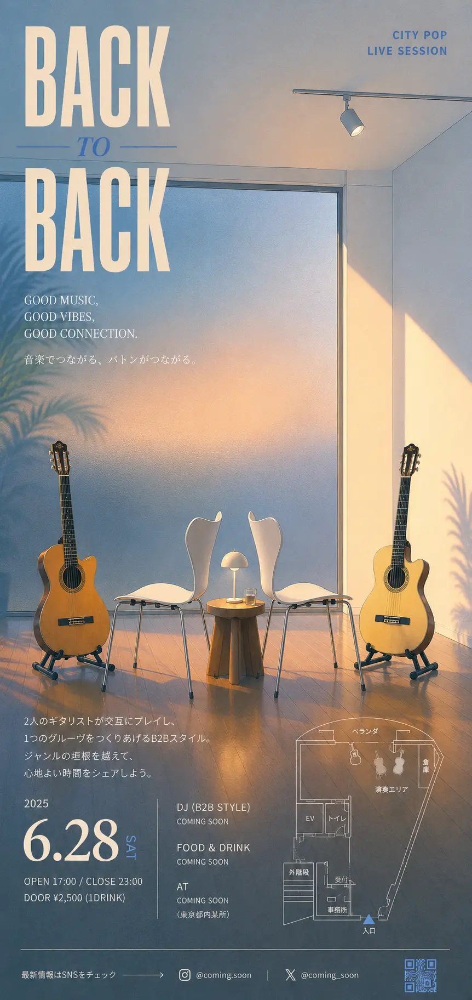
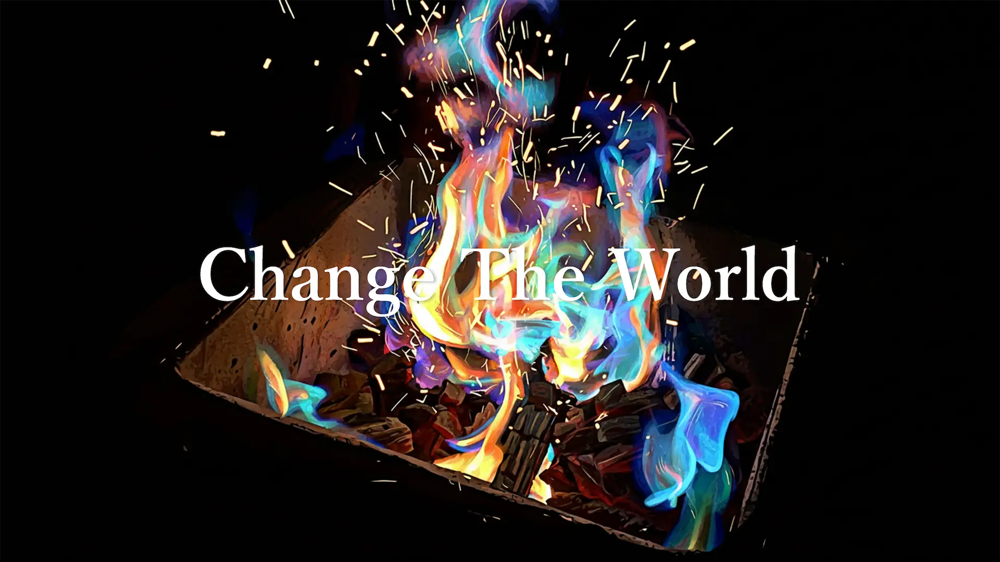
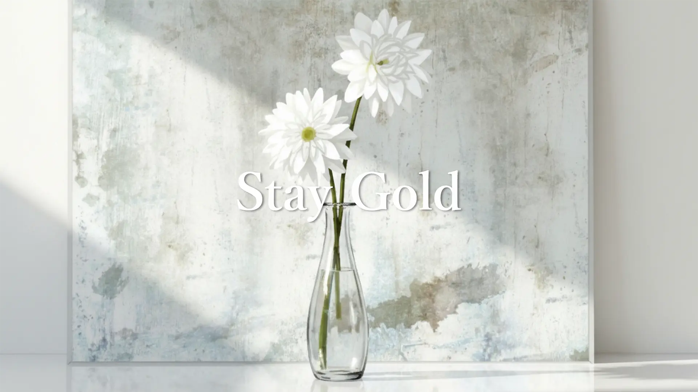
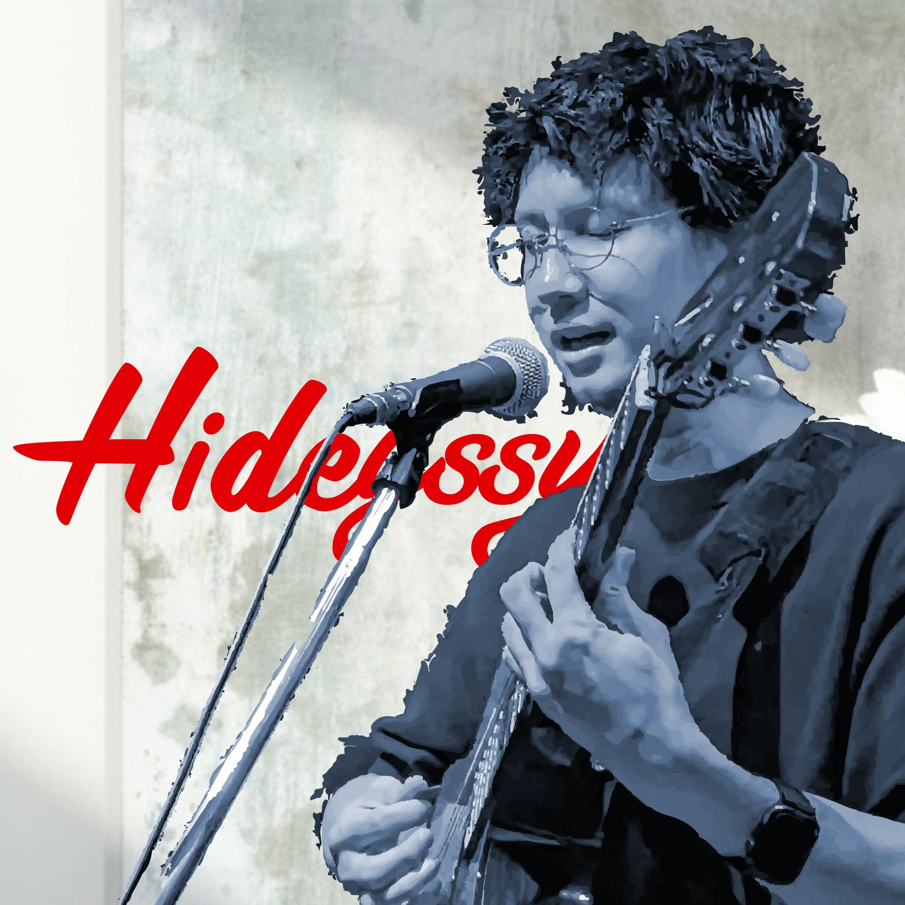

Two-Man Live
Special Page
BACK 2 BACK
Hidéyssy × ツネキチ。音と余白が交差する、静かに熱くなる一夜。
2026年11月頃
都内
予約受付予定

Hidéyssy × ツネキチ。音と余白が交差する、静かに熱くなる一夜。

2人のアーティストが同じステージに立つ夜。照明は控えめ、音は深く、余白の中で少しずつ色を変えていくようなライブをめざしています。



Q. このイベントを開催するにあたって、一番大切にしたことは？
A. 2人が同じ時間を共有すること。単なる出演ではなく、観る人と音が少しだけ触れ合う瞬間をつくることを重視しました。
Q. 観る人にどう感じてほしいですか？
A. 静かに立ち止まる時間、胸の奥で何かが揺れる時間、そして会場を出たあとも少しだけ残る感覚を持って帰ってほしいです。
Q. 今後の展開を考えると、何が重要ですか？
A. 余白のある演出と、出演者の“言葉にしきれない想い”を丁寧に届けること。そこにこそ、ライブの記憶が生まれます。